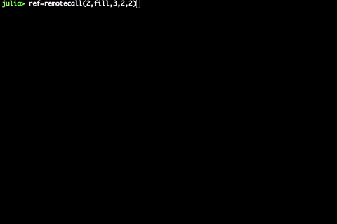
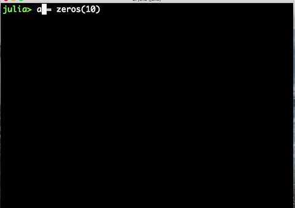

Julia Parallelism¶
Julia provides a multiprocessing environment based on message passing to allow programs to run on multiple processes in separate memory domains at once.
Julia’s implementation of message passing is different from other environments such as MPI [1]. Communication in Julia is generally “one-sided”, meaning that the programmer needs to explicitly manage only one process in a two-process operation. Furthermore, these operations typically do not look like “message send” and “message receive” but rather resemble higher-level operations like calls to user functions.
Low-level Parallelism¶
Parallel programming in Julia is built on two primitives: remote references and remote calls. A remote reference is an object that can be used from any process to refer to an object stored on a particular process. A remote call is a request by one process to call a certain function on certain arguments on another (possibly the same) process.
These references, however, are low-level. Therefore is not recomendable to use them unless is very necessary for specific things. Usually higher level functions would provide very efficient performance.
Some basic functions are:
- remotecall(): Call a function asynchronously on the given arguments on the specified process. Returns a Future. Keyword arguments, if any, are passed through to func.
- fetch(): Waits and fetches a value from x depending on the type of x. Does not remove the item fetched:
- @spawn: Creates a closure around an expression and runs it on an automatically-chosen process, returning a RemoteRef to the result.
- @spawnat: Accepts two arguments, p(process) and an expression. A closure is created around the expression and run asynchronously on process p. Returns a Future to the result.
Examples:¶
In the following example the remotecall function would be used to automatically run the function fill fill which basically fills an array of 2 by 2 with numbers 3. Then we can fetch the result of that remote reference and store in a variable ref. Then using @spawnat we can specify where we want to implement certain function, in this case we want to multiply the array declared by 2, giving as a result a 2 by 2 array with numbers 6.
julia>ref=remotecall(2,fill,2,2,2)
julia>fetch(ref)
julia>ref2= @spawnat 1 2 .* fetch(ref)
julia>fetch(ref2)

High Level Parallelism¶
- @parallel (reducer) : Like the openmp #pragma parallel for This one is often used in for loops. HOWEVER IS IMPORTANT TO DEFINE THE REDUCER PROPERLY!
- pmaps() : This is a parallel execution for more complicated parallel initializations.
- SharedArray : This structure is used for shared memory computations
- @time : This profile tool measure the time. Shown After the execution.
- @elapsed : This profile tool measure the time, but does show the output time rather than the function.
- @Allocated: This profiling tool measure the allocations in memory.
Examples:¶
The following example would show why is important to be carefull when using @parallel using it without declaring a shared array might cause the following problem:
a = zeros(10)
@parallel for i=1:10
a[i] = i
end
fetch(a)

This code did not work as expected because every process tried to write at the same time, causing an overwriting. To fix the problem you can create a Shared Array in the following way:
a = SharedArray(Int64,10)
@sync @parallel for i=1:10
a[i] = i
end
fetch(a)
Another more complicated example :
@everywhere function myrange(q::SharedArray)
idx = indexpids(q)
if idx == 0
# This worker is not assigned a piece
return 1:0, 1:0
end
nchunks = length(procs(q))
splits = [round(Int, s) for s in linspace(0,size(q,2),nchunks+1)]
1:size(q,1), splits[idx]+1:splits[idx+1]
end
# Here's the kernel
@everywhere function advection_chunk!(q, u, irange, jrange, trange)
@show (irange, jrange, trange) # display so we can see what's happening
for t in trange, j in jrange, i in irange
q[i,j,t+1] = q[i,j,t] + u[i,j,t]
end
q
end
# Here's a convenience wrapper for a SharedArray implementation
@everywhere advection_shared_chunk!(q, u) = advection_chunk!(q, u, myrange(q)..., 1:size(q,3)-1)
function advection_parallel!(q, u)
for t = 1:size(q,3)-1
@sync @parallel for j = 1:size(q,2)
for i = 1:size(q,1)
q[i,j,t+1]= q[i,j,t] + u[i,j,t]
end
end
end
q
end
function advection_shared!(q, u)
@sync begin
for p in procs(q)
@async remotecall_wait(advection_shared_chunk!, p, q, u)
end
end
q
end
q = SharedArray(Float64, (500,500,500))
u = SharedArray(Float64, (500,500,500))
# Run once to JIT-compile
advection_parallel!(q, u)
advection_shared!(q,u)
@time advection_parallel!(q, u);
@time advection_shared!(q,u);
Look at the jupyter notebook with the final presentation for more details.